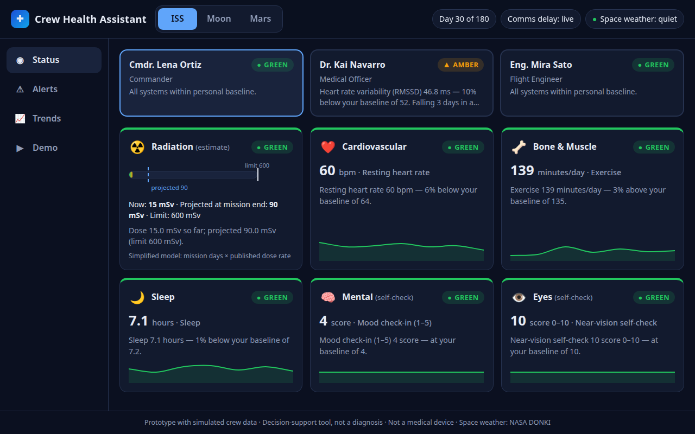
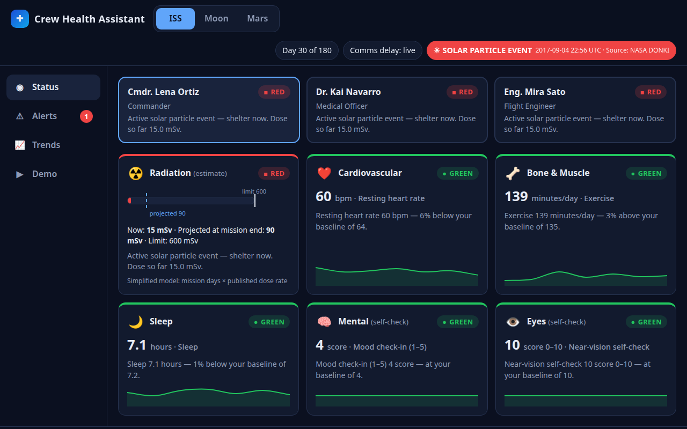
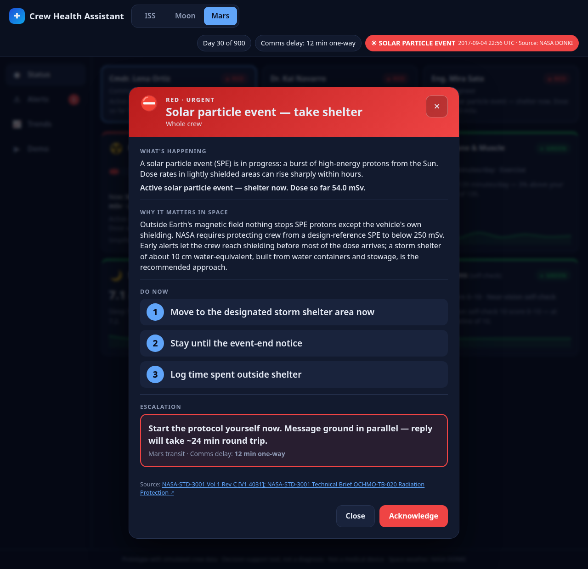
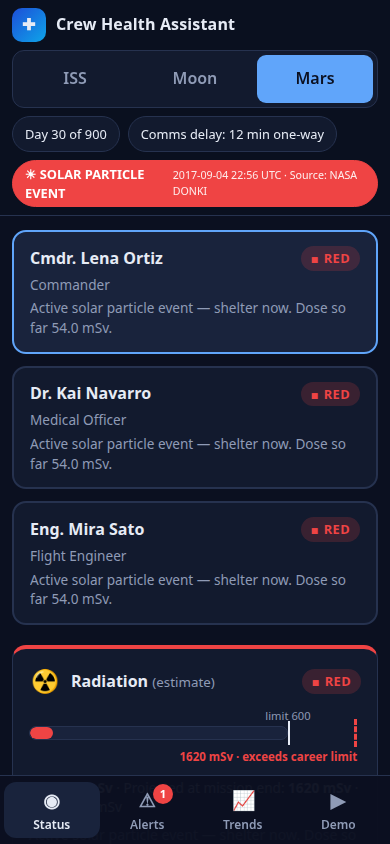

Personal-baseline health checks and mission-aware guidance that astronauts can act on themselves.
Challenge: Create Health Monitoring Software for Astronauts on Space Missions
Team: {{TEAM}}
Members: {{MEMBERS}}



Replays the real 4 Sep 2017 solar particle event; radiation turns RED for the whole crew and opens the storm-shelter card.
600 mSv career dose limit, <250 mSv design solar event, ALARA; exercise, muscle and bone requirements.
Radiation protection (storm shelter), exercise, sleep accommodations, behavioral health: the basis of the “Do now” steps.
Cardiovascular adaptations, sleep and schedules, SANS vision changes: the “why it matters in space” text.
ISS ~0.5 mSv/day, lunar surface 1.37 mSv/day (Chang'e 4), Mars transit 1.8 mSv/day (Curiosity RAD).
All thresholds, cards and missions live in JSON data files. No AI at runtime; every status can be traced to a rule.
Personal ± bands, 3-day trend checks, absolute limits. Worst indicator sets the module; worst module sets the astronaut.
Mission day × published dose rate, projected to mission end, plus the replayed solar event.
ISS / Moon / Mars changes comms delay, dose rate and escalation wording live.
Built with Java 21 · Spring Boot · HTML/CSS/JavaScript · Chart.js · Docker · Render. 13 automated tests. Deterministic simulated crew (fixed seed).
Code written with AI assistance (Claude Code) and reviewed by the team. Screenshots are of the real app.

Live app
crew-health-assistant.onrender.com
Code
github.com/Talant2801/nasa-crew-health-assistant
Open Demo → Solar storm, tap the Radiation tile, then switch to Mars.